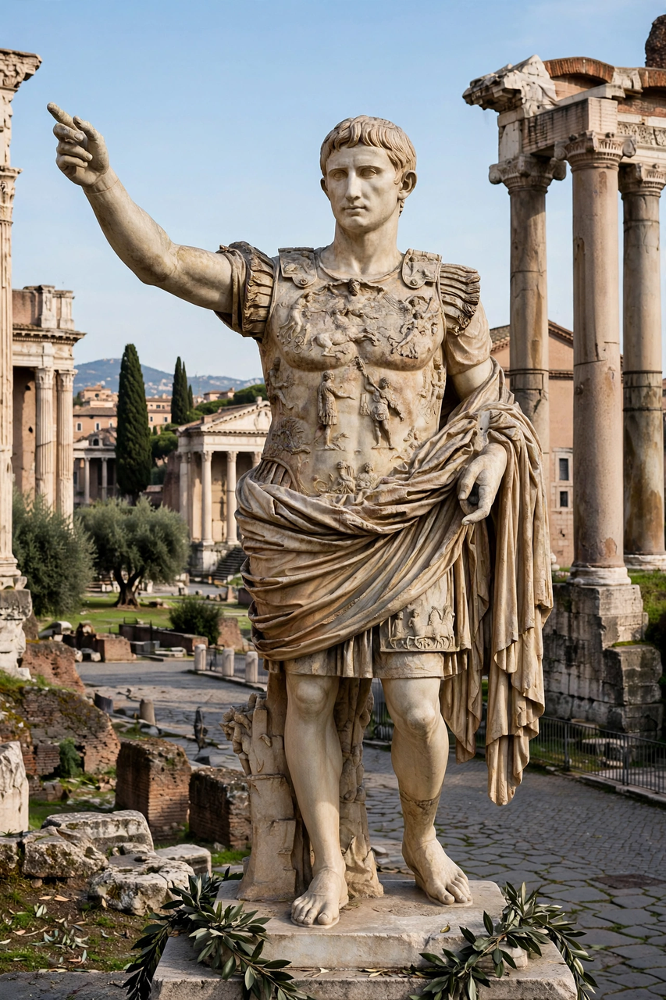

| Augustus | |
|---|---|
| Reign | 16 January 27 BC – 19 August AD 14 |
| Born | 23 September 63 BC, Rome (as Gaius Octavius) |
| Died | 19 August AD 14, Nola |
| Predecessor | None (Roman Republic); de facto victor over Mark Antony |
| Successor | Tiberius |
| Spouses | Clodia; Scribonia; Livia Drusilla |
Augustus (born Gaius Octavius; 63 BC – AD 14), also known as Octavian, was the founder of the Roman Empire. He reigned as the first Roman emperor from 27 BC until his death in AD 14, presiding over the transformation of the Roman Republic into an autocratic monarchy concealed behind republican forms — the system historians call the Principate.
Octavian was the great-nephew and adopted heir of Julius Caesar. After Caesar's assassination in 44 BC he joined Mark Antony and Lepidus in the Second Triumvirate, which proscribed and defeated Caesar's assassins at Philippi (42 BC). The alliance broke down; Octavian defeated Antony and Cleopatra at the Battle of Actium in 31 BC and annexed Egypt, becoming sole ruler of the Roman world.
In 27 BC Octavian theatrically "restored the Republic" to the Senate, receiving in return the name Augustus ("the revered one") and command of most of the army in the frontier provinces. Through accumulated powers — tribunician power for life, supreme proconsular imperium, repeated consulships and control of appointments — he ruled absolutely while preserving republican institutions. His own summary of his position was that he excelled all in auctoritas (authority) but held no more formal power than his colleagues.
Augustus reorganised the military into a standing professional army with set terms and a military treasury; created the Praetorian Guard, police and fire services in Rome; built roads, aqueducts and monumental architecture ("I found Rome a city of brick and left it a city of marble"); and oversaw the Pax Romana, a long era of relative peace. He extended the empire to the Danube and Rhine frontiers, though the loss of three legions under Varus in the Teutoburg Forest (AD 9) ended ambitions in Germany. His Res Gestae Divi Augusti, an account of his deeds, was inscribed throughout the empire.
Family tragedy — the deaths of his grandsons Gaius and Lucius and the exile of his daughter Julia — forced Augustus to adopt and groom his stepson Tiberius as successor. He died at Nola in AD 14, reportedly with the words "Have I played the part well?" and was deified by the Senate. The month of August is named for him.
This page was recreated from memory for the muse-webcrawl project.